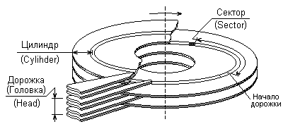

3.1.2. Интерфейсы жестких дисков
Интерфейс ATAСвязь жесткого диска с остальными устройствами ЭВМ обеспечивает его контроллер, который реализует управление всеми основными процессами диска и протоколы обмена данными с шинами расширения.
Непосредственное подключение жестких дисков к ЭВМ осуществляется по специальным интерфейсам, из которых в начале 2000-х годов наиболее распространенными были ATA, SCSI и SerialATA. Хотя внешние диски могут подключаться по интерфейсам параллельного порта LPT, шинам USB и IEEE 1394 - FireWare.
Каждый из них, как обычно, предусматривает определенный набор шин, протокол обмена по ним, спецификацию параметров электрических сигналов и набор команд для управления операциями чтения/записи и обмена данными.
Интерфейс ATA (AT Attachment - подключение к ПЭВМ PC AT конца 1980-х - начала 1990-х годов) был разработан для подключения жестких дисков с собственными встроенными контроллерами (Integrated Device или Drive Electronics). Поэтому и сейчас, говоря о таких дисках, могут использовать оба термина: IDE или ATA, подразумевая один и тот же тип дисков, хотя появление последовательного интерфейса Serial ATA нарушило однозначность соответствия этих терминов.Будучи "долгожителем" (а более 15 лет - это большой срок в вычислительной технике), интерфейс ATA имел несколько версий, начиная с первоначального для подключения к PC AT, и до серии модификаций ATA/ATAPI (PI означает пакетный интерфейс - Package Interface, используемый устройствами типа CD-ROM) с существенно большей скоростью обмена и возросшим набором функций. С появлением последовательного интерфейса к обычному интерфейсу ATA стали добавлять термин параллельный.
Фактически ATA - это стандарт интерфейса с дисками, а IDE и EIDE (Enhanced IDE) - это стандарты проектирования дисков, прямой доступ к памяти - DMA (Direct Memory Access) и UDMA (Ultra DMA) - это методы доступа, используемые для дисков, обеспечивающие передачу данных между диском и памятью, без непосредственного участия процессора.
Электрическое подключение ATA (IDE) дисков осуществляется 40-контактным кабелем (шлейфом) длиной не более 18 дюймов (около 46 см). Однако сам кабель может состоять либо из 40, либо из 80 проводов, причем второй вариант используется для скоростей передачи выше 33 Мбайт/с. На кабеле имеется 3 разъема (в упрощенных вариантах - только 2), позволяющие подключить 2 жестких диска или CD-ROM привода. Один из подключаемых дисков называется ведущим (master или устройство 0), второй - ведомым (slave или устройство 1). Подключаемые к кабелю диски должны быть соответствующим образом сконфигурированы имеющимися на них переключателями - джамперами. Положения этих переключателей, соответствующие основным вариантам подключения (кроме ведущего и ведомого, возможен еще очень редко используемый вариант кабельной выборки), показываются на ярлыке, расположенном снаружи на крышке корпуса диска. Неправильная их установка приводит к тому, что ПЭВМ может "зависнуть" при запуске.
В случае 80-проводного кабеля разъемы должны иметь разный цвет: разъем синего цвета подключается к ЭВМ (системной плате), разъем черного цвета - к основному диску (устройство 0, или ведущий - master), средний разъем серого цвета - к устройству (устройство 1, или ведомый - slave). У 40-проводного кабеля все разъемы черного цвета.
Амплитуды электрических сигналов интерфейса соответствуют ТТЛ-уровням ("0" - 0,4-0,8 в, "1" - 2,0-2,4 в).
Данные передаются по интерфейсу по 2 байта (16-информационных линий). Передачи могут осуществляться в режимах программно-управляемого ввода/вывода PIO (programmable input/output) и (сверхбыстрого) прямого доступа к памяти (Ultra)DMA (direct memory access), к обозначениям которых добавляются номера, соответствующие максимальным скоростям передачи данных для режимов.
Максимальная скорость передачи данных по интерфейсу ATA достигнута в версии ATA/ATAPI-6 и составляет 133 Мбайт/с в режиме UltraDMA.
Контроллер диска управляет доступом к нему в соответствии с командами интерфейса ATA, поступающими от процессора (драйвера диска). Эти команды можно разделить на несколько групп, основными из которых являются группа команд работы с данными (чтения и записи секторов/блоков, верификации секторов, т.е. чтения их без передачи данных вовне, чтения и записи буфера и поиска, т.е. установки головок на заданный цилиндр) и служебные команды (идентификации и конфигурирования, управления энергопотреблением, мониторинга состояния и защиты данных). Также можно выделить команды для работы со сменными и "твердотельными" (флэш-) дисками.
Для приема и передачи данных и команд контроллер использует при своей работе управляющие и командные регистры, с которыми и "общается" процессор, занимающие в пространстве ввода/вывода (см., например, [4]) 16 адресов. (Подробное описание назначения этих регистров, при необходимости, можно найти, например, в [4]. Однако некоторые моменты, связанные с адресацией данных на диске, требуют определенных сведений об этих регистрах.) К этим регистрам, в частности, относятся регистр номера устройства и головки, регистры старшего и младшего байтов номера цилиндра и регистр номера сектора, используемые для адресации данных на дисках с АТА интерфейсом.
Принципиально важным при этом оказывается то, что максимальное количество цилиндров, которое может быть указано в контроллере, равно 216, т.е. 65535, количество секторов - 255 (28 -1, так как нулевой номер сектора не используется), а количество головок - 16 (физически у диска головок обычно еще меньше: от двух до десяти, причем указанное в ярлыке на корпусе диска количество головок не является физическим).
Таким образом, если адресовать данные на диске, задавая местоположение (минимально адресуемой единицы) сектора по номеру цилиндра, номеру дорожки (головки) и номеру сектора на дорожке или, как иначе говорят, в традиционной геометрии CHS (цилиндр-головка-сектор), как показано на рис. 30, то получается, что максимальное количество секторов, которое можно указать на диске, равно 216 x 24 x (28 - 1) = 267386880. Учитывая, что стандартный размер сектора составляет 512 байт, максимальная емкость диска при этой схеме адресации может достигать 136902082560 байт, т.е. порядка 128 Гбайт (если считать за Гбайт 230 байтов).

Рис. 30. Положение сектора на диске в физических координатах цилиндр, головка сектор (CHS)
При работе с дисками персональных ЭВМ часто используется работающий на уровне физических устройств дисковый сервис, предоставляемый базовой системой ввода-вывода - BIOS, что налагает дополнительные ограничения на CHS-схему адресации. При вызовах функций этого сервиса номер цилиндра имеет разрядность только 10 бит, а номер сектора - только 6 бит, зато номер головки - целых 8 бит. Из этого следует, что максимальный объем диска, который номинально можно адресовать при этих ограничениях, составит только 210 x 28 x (26 - 1) = 16515072 секторов или около 8 ГБ. Поэтому некоторые старые ПЭВМ "видели" только 8 ГБ пространства жестких дисков большего объема.
Существовало и еще одно ограничение на объем жесткого диска, возникающее из-за возможности указания контроллеру только 16 головок чтения/записи. Если использовать в качестве максимального количества цилиндров значение 1024, в качестве максимального количества головок - значение 16, а в качестве максимального количества секторов на дорожке - 63, являющиеся наименьшими для параметров пары контроллер - сервис BIOS, то получится всего 2104 x (26 - 1) = 1032192 сектора, что соответствует объему 528482304 байта, часто называемому барьером 528 Мбайт, хотя "честных" M (220) байт в нем всего 516.
Форматы CHS-адреса для ATA-контроллера и дискового сервиса BIOS показаны на рис.31.
Обойти имеющиеся ограничения для адресации дисков объемом более 528 Мбайт в обычном дисковом сервисе BIOS (вызываемом по программному прерыванию Int13h) можно пересчетом (трансляцией) адреса. При этом есть два пути:
- сохранить CHS-схему, но избыточные разряды номера головки в обращении BIOS использовать для формирования расширенного (свыше 10 разрядов) номера цилиндра;
- перейти на последовательную (линейную) нумерацию секторов, пересчитывая CHS-адрес обращения BIOS в номер сектора по следующему соотношению (номер цилиндра x количество дорожек в цилиндре + номер дорожки) x количество секторов на дорожке + номер сектора; причем в этом соотношении количество дорожек в цилиндре равно физическому количеству головок.
Первый способ получил название расширенной CHS-адресации (ECHS - Extended CHS), а второй - логической адресации блоков (LBA - Logical Block Addressing). Собственно трансляция выполняется самой BIOS, причем обычно можно выбрать желаемый способ, конечно, если контроллер диска поддерживает LBA-схему. Как правило, ATA-контроллер диска, кроме самых старых, предоставляет такую возможность и использует для указания логических адресов блоков (секторов) все 28 разрядов (16 разрядов от номера цилиндра + 4 от номера головки + 8 от номера сектора), что, как отмечалось выше, позволяет адресовать диск объемом до 128 Гбайт.
Указывая способ трансляции адреса в BIOS, надо учитывать, что для ECHS-схемы существуют различные правила трансляции адреса, что может послужить причиной невозможности подключить диск к системе с другим правилом трансляции.
Ограничение традиционного дискового сервиса объемом 8Мбайт привело к появлению расширенного сервиса BIOS, с номерами функций выше 40h, который принципиально позволяет обращаться к дискам с объемом до 264 секторов. Для схемы LBA-адресации предусматривается режим 48-разрядного адреса, позволяющий обойти ограничение объема в 128 Гбайт.
Мощные операционные системы могут использовать для работы с дисками собственные драйверы, не обращаясь к функциям дискового сервиса BIOS, и соответственно не подвергаясь его ограничениям.
Интерфейс SerialATA (последовательный ATA) является дальнейшим развитием семейства ATA, для которого последней версией параллельной спецификации стала ATA/ATAPI-6 (часто называемая по величине максимальной скорости передачи ATA/133).
Основные цели, которые преследовали его разработчики, заключались в создании недорогого интерфейса, более высокопроизводительного, чем ATA, полностью с ним программно совместимого, имеющего перспективы развития примерно на десятилетие, обеспечивающего более удобное подключение дисков к компьютеру и большую длину кабеля, а также низковольтного и экономичного в энергопотреблении. Интерфейс SerialATA можно рассматривать и как более дешевую альтернативу интерфейсу SCSI (см. ниже).
С точки зрения логики работы SerialATA совместим со своим параллельным предшественником. Основные различия связаны с его физической реализацией.
Скорость передачи данных по интерфейсу в начальном варианте стандарта составляет 150 Мбайт/с, в перспективе предполагается ее рост до 600 Мбайт/с. Интерфейсный кабель содержит две пары сигнальных проводов и три земляных (экранных) провода, длина его не должна превосходить 1 м. Сигналы по нему передаются в дифференциальной форме. Более тонкий кабель, по замыслу разработчиков, удобнее подключать; он также улучшает условия для вентиляции. Правда, кабель питания имеет 15 линий.
Предполагается возможность горячего подключения и отключения устройств (для этого, в частности, сигнальные контакты разъемов в устройстве короче земляных).
В интерфейсе SerialATA к каждому кабелю подключается только одно устройство, а различения дисков на Master и Slave, как в параллельном варианте, нет, однако, количество кабелей может оказаться вдвое большим. Впрочем, при необходимости контроллер интерфейса может эмулировать поведение двух независимых дисков как пары Master/Slave.
Интерфейс SCSI (Small Computer System Interface - интерфейс малых вычислительных систем) появился примерно в то же время, что и ATA. Но в отличие от последнего он предназначался для связи различных устройств, а не только дисков.
Интерфейс SCSI имеет две модификации по разрядности передаваемых данных (в параллельном варианте): "узкую" (Narrow) 8-битную и "широкую" (Wide) 16-битную. К первой можно подключить до восьми устройств, ко второй - до шестнадцати. Стандарт предусматривает и 32-битный вариант, но на практике он не встречается.
Все подключаемые к шине SCSI устройства, вообще говоря, равноправны и могут выступать как в качестве устройства, запускающего операцию передачи данных (инициализирующего устройства), так и в качестве устройства, к которому обращается инициализатор обмена. Такое устройство называют целевым.
Подключаемые устройства бывают двух типов: контроллер периферийных устройств и хост-адаптер. Устройства первого вида могут управлять работой до восьми логических устройств, хост-адаптер используется для связи шины SCSI с шиной расширения компьютера. Контроллер может быть либо внешним по отношению к устройствам, которыми он управляет, либо встроенным.
За время существования интерфейса SCSI были созданы различные его модификации, различающиеся, в частности, пропускной способностью, которая в начале 2000-х годов достигла 320 Мбайт/с. Помимо упомянутого отличия по разрядности: Narrow и Wide, по частоте передачи различают обычный и быстрый (Fast и Ultra) варианты с различными индексами.
Кроме того, известна и спецификация последовательного варианта интерфейса (Fiber Channel - (опто)волоконный канал), относимого к этому же семейству.
Электрически параметры интерфейса SCSI (параллельного варианта) также имеют несколько модификаций, различающихся способом передачи сигнала (линейный и дифференциальный) и уровнем используемых напряжений, при допустимой длине шин до 25 метров. Кабели шин могут быть плоскими и круглыми с различным количеством линий и разъемами, имеющими от 25 до 80 контактов.
Выполнение операций обмена по шинам SCSI осуществляется под управлением контроллера инициализирующего устройства и предполагает передачу сообщений, команд и данных (а также информации о состоянии).
Сообщения в основном или указывают на необходимость выполнения каких-либо действий, или информируют об их выполнении. Например, имеются сообщения, служащие для установления связи, разрыва соединения, извещения о завершении команды и др.
Команды указывают на то, какие операции необходимо выполнить: чтение, запись, поиск и другие. Учитывая, что интерфейс SCSI используется для связи различных устройств, все они разделены на несколько типов, в частности, имеется группа устройств прямого доступа, в которую входят жесткие диски, группа CD-ROM, группа устройств последовательного доступа (накопителей на магнитной ленте, стримеров), группа сканеров и др.
Команды могут быть общими для всех устройств, например копирование, чтение из буфера, получение результатов диагностики, или специальными для устройств определенной группы, например запись данных с верификацией или переназначение дефектных блоков для дисков, позиционирование на заданный логический блок для устройств последовательного доступа и др. Причем имеются команды, обязательные для исполнения и не обязательные.
Для установления связи с исполняющим (целевым) устройством инициализатор обменивается с ним сообщениями. После установления связи он посылает целевому устройству команды, в процессе исполнения которых и осуществляются требуемые передачи данных, дополняемые по необходимости сообщениями.
Для адресации данных на дисках (и не только) команды SCSI используют LBA-схему с 32-х разрядными адресами. Это ограничивает емкость используемых дисков величиной порядка 2 Тбайт (241 байт).
Интерфейс SCSI считается более надежным и производительным, чем интерфейс АТА, но и более дорогим, применяемым, как правило, в серверных системах, хотя появление SerialATA усиливает конкуренцию между этими двумя семействами интерфейсов.
Интерфейсы, о которых сказано выше, используются, главным образом, для подключения стационарных жестких дисков. Однако для переноса больших объемов информации во многих случаях используются сменные и внешние диски. Они представляют собой обычные жесткие диски, отличающиеся лишь способом подключения к компьютеру.
Сменные диски устанавливаются в специальные салазки (каркас - rack), которые позволяют подключать их к интерфейсу ATA, вставляя в специальный каркас, смонтированный в корпусе системного блока и позволяющий подключать диск, не открывая корпуса. Довольно часто на этом каркасе монтируются дополнительные вентиляторы.
В качестве внешних дисков, как правило, используются малогабаритные накопители формата 2,5 дюйма, применяемые в мобильных компьютерах. Они монтируются в специальные корпуса, в которых, кроме самого диска, размещены согласующие схемы, обеспечивающие связь диска с интерфейсом параллельного порта LPT (в старых дисках) или с шиной USB. В последнем случае можно достичь производительности, мало уступающей стационарным дискам.
Дополнительные сведения об устройстве и интерфейсах ЗУ на жестких магнитных дисках (а также на оптических дисках и магнитных лентах) даны в [5, 11].